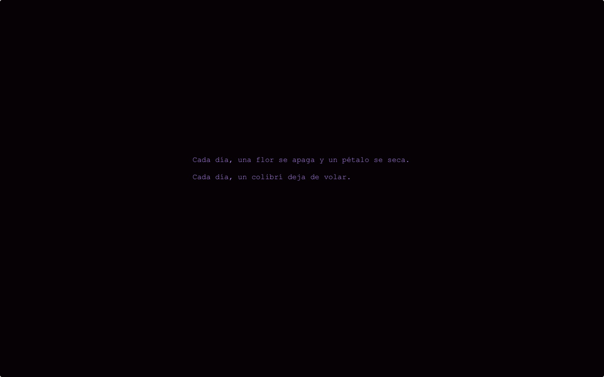
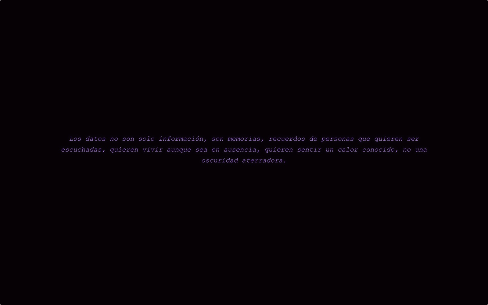
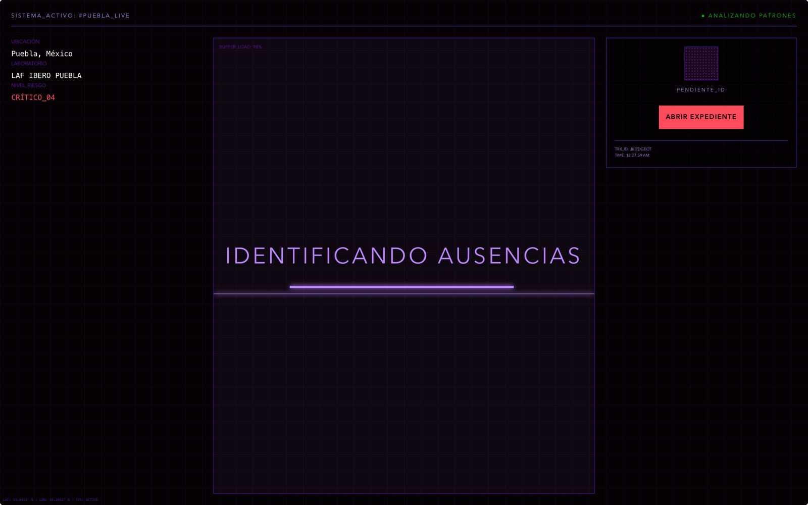

Case study, interactive cartography
Geografías del Silencio
An interactive map so that femicides in Puebla stop getting lost among cold numbers: every point is a case, documented with memory and without revictimisation.
Winner of the Digital Design category, DISEÑA MX 2026
- My role
- UX/UI design, narrative concept and visual direction, cleaning and structuring the forensic databases, and frontend development with ArcGIS and Babylon.js.
- Context
- Social service at the Forensic Architecture Laboratory (LAF), IBERO Puebla
- Data
- Observatory of Social and Gender Violence (OVSG), IBERO Puebla
- Built with
- ArcGIS, Babylon.js, HTML, CSS, JavaScript

The problem
Official reports turn femicides into cold figures, and the patterns behind them stay hidden. We wanted to break that silence for the city and state of Puebla.
240+ probable femicides documented between 2021 and 2025, in 28 municipalities
1 / 10 one case every 10 days in 2025
Two patterns demanded an urgent response: aggressors from the victim's intimate circle went from 30% to 60% of cases, and the bodies were increasingly found inside homes rather than in public space.
The data
The records come from the Observatory of Social and Gender Violence (OVSG) at IBERO Puebla and were worked on inside the Forensic Architecture Laboratory.
80% of the work was cleaning and curating the databases.
We followed a principle of radical empathy: the revictimising or morbid language of the official records was removed, so every point on the map reads as a testimony of memory and justice, not as a crime-scene detail.
Design decisions
-
A territorial scar
A geospatial approach turns abstract spreadsheet rows into something you can see on the land. Timeline filters (2024, 2025, 2026) and a file for each case let people go from the pattern to the person.
-
A dark, forensic look
Blacks, violets and coral red accents, with high contrast. It isn't decoration: it prepares the visitor emotionally before they face the data.
-
Words before the map
The site opens with short lines of text on a black screen before the interface appears, so people arrive at the data slowly and with care.
-
No revictimisation
No morbid images or wording. Each case is presented with the same respect, as memory rather than spectacle.
The experience


